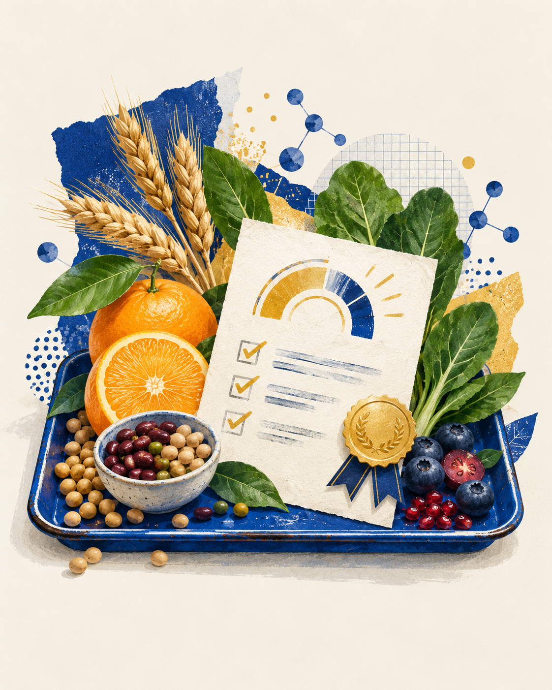

食
吉林大学 · 食品科学与工程学院营养与健康科普活动
互动 02 · 现场挑战
Nutrition Challenge / 2026
营养素消化
对错大挑战
从食品科学与营养学的日常问题出发，随机抽取 5 道题，测测你的“消化吸收力”。答对 3 题及以上，即可参与现场抽奖；答错也没关系，马上带走一个有用的知识点。
JLU · FOOD SCIENCE
把知识
吃进生活里
吃进生活里
今天的观察：
酸甜、温度与时间，都会改变食物里的营养。
酸甜、温度与时间，都会改变食物里的营养。
BALANCED PLATE
营养配色
营养配色
营养素理化性质 · 消化吸收影响因素
第 1 题 / 共 5 题20%
得分 0
生活营养判断题
选择一个答案后，会立即看到原理小贴士

FIELD NOTE
挑战完成！
0 / 5
恭喜获得抽奖资格请将本页面出示给现场志愿者，领取一次抽奖机会。好运正在路上！